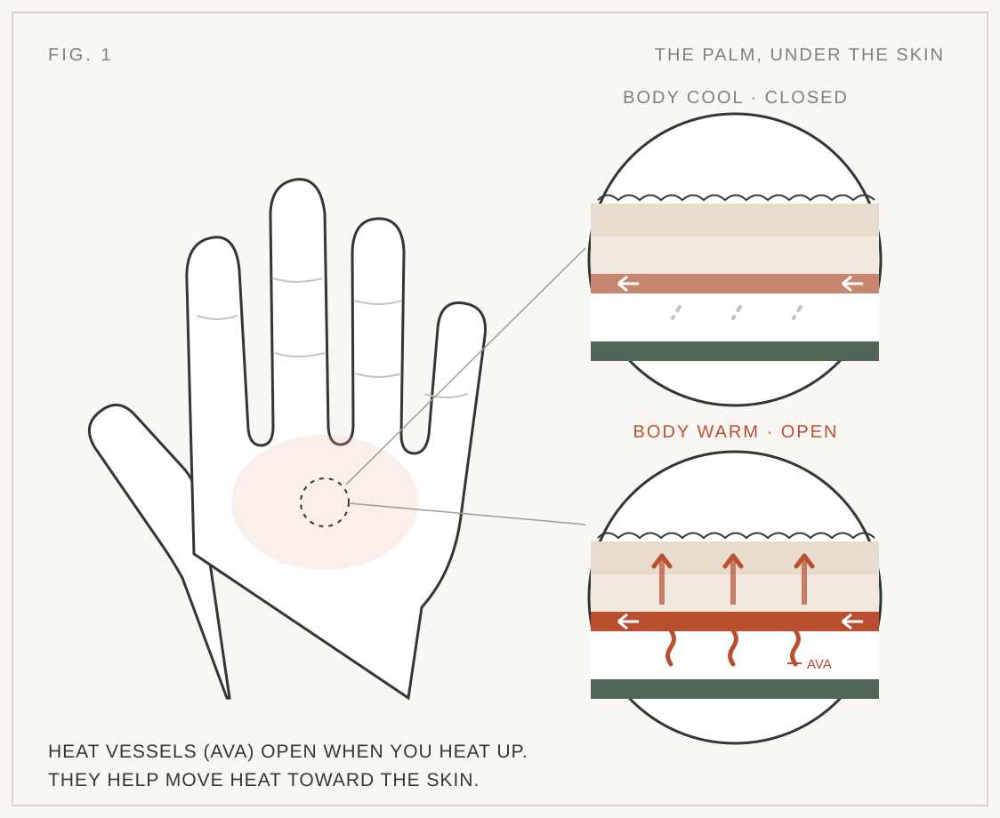

체열 제거와 운동 연구
심부체온 약 38.8°C, 냉각면 10°C 조건에서 최대 약 42W 열 제거가 측정됐습니다. Stanford 연구에서는 운동 지속시간 증가와 저항운동량 변화가, 2025년 반복 스프린트 연구에서는 후반 기록 저하 감소와 고속 유지 횟수 증가가 보고됐습니다.
Palm Cooling은 손바닥의 혈류를 이용해 운동 중 열을 배출하는 기술입니다. 체인지오버를 활용하면 경기 흐름을 끊지 않고 선수 냉각과 회복을 지원할 수 있습니다.
기술 원리부터 서울오픈 제안까지
Palm Cooling은 손바닥 혈류를 통해 운동 중 체열을 외부로 옮깁니다. 테니스의 직접 연구와 선수·대회 도입 사례를 바탕으로, 서울오픈에서도 Changeover와 선수 공간을 활용한 파일럿을 검토할 수 있습니다.
심부체온 약 38.8°C, 냉각면 10°C 조건에서 최대 약 42W 열 제거가 측정됐습니다. Stanford 연구에서는 운동 지속시간 증가와 저항운동량 변화가, 2025년 반복 스프린트 연구에서는 후반 기록 저하 감소와 고속 유지 횟수 증가가 보고됐습니다.
2015년 고온 모의 경기에서 남자 대학선수 12명이 홀수 게임 뒤 양손을 10°C로 약 60초 냉각했습니다. 체심부체온·심박수 관리, RPE 감소, 스트로크 정확도 유지가 보고됐습니다. 장시간 경기·반복 고강도·야외 더위와 약 90초 Changeover가 적용에 맞습니다.
Atlanta Open은 참가 선수 누구나 CoolMitt를 이용할 수 있게 했고, Djokovic의 KYLA 프로토타입 사용과 Tennis Australia 아카데미의 Kühler 파일럿도 확인됩니다. 이와 별도로 Miami의 냉각 장갑은 넓은 의미의 손 냉각 사례입니다. 타 종목에서는 올림픽 레슬링, NCAA·NHL 경기, USA Cycling 연구 협업, 잉글랜드 대표팀 훈련 캠프까지 활용이 넓어지고 있습니다.
2026 ATP Challenger 125 서울오픈에서 선수 라운지·연습·회복 공간에 장비를 두고, 규정이 허용하면 경기 휴식에도 적용할 수 있습니다. 선수 서비스와 브랜드 피드백·아시아 사용 레퍼런스를 위해 Official Athlete Cooling Partner 형태의 기술 파일럿을 제안합니다.
손바닥을 몸과 외부 사이의 열교환면으로 활용
손바닥·발바닥의 털 없는 피부에는 AVA(동정맥 문합)가 발달해 있어 혈류를 통한 열 교환에 활용될 수 있습니다.

보고서에 정리된 핵심 결과
심부체온을 약 38.8°C까지 올린 참가자에게 10°C 냉각을 적용했을 때, 최대 약 42W 수준의 열 제거가 측정됐습니다.
손바닥 냉각에 음압을 결합해 혈류와 열교환을 유지하려는 방식이 연구됐습니다. 고온 운동에서 체온 상승 속도 완화와 운동 지속시간 증가, 저항 운동량 변화가 보고됐습니다.
반복 스프린트 연구에서 후반 기록 저하가 줄거나, 높은 속도를 유지한 반복 횟수가 늘어난 결과가 보고됐습니다.
남자 대학 테니스 선수 12명이 고온 환경에서 모의 경기를 하고, 홀수 게임 종료 후 양손을 10°C로 냉각했습니다. 심부체온·심박수 관리, RPE 감소, 그라운드스트로크 정확도 유지가 보고됐습니다.
경기 중 사용 사례와 연맹 파일럿이 이어집니다
남자 대학 선수 12명의 고온 모의 경기에서 홀수 게임 뒤 양손 냉각을 적용했습니다. 심부체온·심박수·RPE와 스트로크 정확도를 관찰했습니다.
CoolMitt를 대회 참가 선수 누구나 쓸 수 있도록 현장에 배치했고 복식 선수 Hans Hach의 사용도 보도됐습니다. 상업적 공식 스폰서십으로 확인된 것은 아닙니다.
현장 보도 보기 ↗KYLA와 복수 매체 보도에 따르면 Djokovic가 Australian Open 경기 체인지오버에서 프로토타입을 사용했습니다. 대회 공식 도입이나 유료 후원 관계를 뜻하지는 않습니다.
KYLA의 사용 사례 설명 ↗National Tennis Academy에서 훈련, 매치플레이 시뮬레이션, 회복 프로토콜에 적용합니다. Australian Open 본선 경기에서의 선수 제공 사례와는 구분됩니다.
Australian Open 공식 발표 ↗
Miami Open 2025의 Djokovic 냉각 장갑은 전문 Palm Cooling 장치가 아닌 넓은 의미의 경기 중 손 냉각 사례입니다. Atlanta 보도와 WIRED의 종목별 현장 사례를 함께 참고했습니다.
대회 사용, 현장 협업, 연구 파일럿을 구분해 봅니다
미국 레슬링 대표팀은 Paris 올림픽 기간 CoolMitt를 사용했습니다. 협력은 Olympic Trials에서 시작해 이후 공식 파트너십으로 이어졌습니다.
USA Wrestling 발표 ↗South Carolina 여자농구 선수들은 NCAA 결승을 포함한 경기 타임아웃에 사용했고, Edmonton Oilers 선수들은 NHL 벤치와 피리어드 사이에 활용한 것으로 취재됐습니다.
WIRED 현장 취재 ↗잉글랜드 대표팀은 월드컵 전 훈련 캠프에서 CryoTherm Palm을 사용했습니다. BBC는 대회 예정된 워터 브레이크 활용 계획도 보도했습니다.
BBC 보도 ↗ · Therabody 발표 ↗USA Cycling과 CoolMitt는 국가대표급 선수 제품 테스트와 냉각 기술의 단기·장기 효과를 살피는 연구 협업을 발표했습니다.
USA Cycling 발표 ↗Tom Pidcock가 Stage 16 개인 타임트라이얼 출발 전 워밍업에서 냉각 미트를 사용하는 모습이 현장 보도에 포착됐습니다. 선수의 실사용 사례입니다.
Cyclingnews 보도 ↗경기 구조에 이미 냉각 타이밍이 있습니다
경기 시간이 길어지면 체열이 누적될 수 있습니다.
스프린트와 방향 전환, 가속·감속이 이어집니다.
여름에는 기온과 일사에 직접 노출됩니다.
체인지오버는 음료와 냉각을 함께 할 수 있는 구간입니다.
개인 사용에서 연맹 파일럿까지
Stanford 등에서 열 제거와 운동 수행 가능성을 연구
경기 중 Cooling Glove·Palm Cooling 장치 활용 사례
2024 Atlanta Open, CoolMitt 선수 지원 사례
2026 Tennis Australia와 Kühler 테스트
방식과 테니스 관련 사례 비교

이미지: CoolMitt 공식 제품 페이지
물 순환식 냉각

이미지: Therabody 공식 제품 페이지
전자식 능동 냉각

이미지: Kühler 공식 제품 페이지
휴대형 Palm Cooling

이미지: KYLA 공식 제품 페이지
Palm Cooling 장치

이미지: Apex Cool Labs 공식 제품 페이지
Narwhals

이미지: AVA Cooling 공식 제품 페이지
AF Charge Bar
협찬을 넘어 선수 경험을 만드는 파일럿
선수 전용 공간·라운지에 설치
연습·워밍업 후 사용 지원
규정이 허용하는 범위에서 체인지오버 활용
경기 종료 후 회복 구역에 배치
선수 냉각 서비스, 최신 퍼포먼스 기술 도입, 대회 콘텐츠
프로 선수 피드백, 실제 사용 레퍼런스, 아시아 시장 노출
“Palm Cooling 기술의 프로테니스 도입 흐름을 2026 서울오픈에서 아시아로 확장하고 싶습니다.”
보고서 기준 제안 순서
서울오픈은 선수에게 냉각 기술을 제공하고, 파트너사는 실제 프로테니스 사용 경험과 선수 피드백을 확보하는 파일럿으로 설계할 수 있습니다.